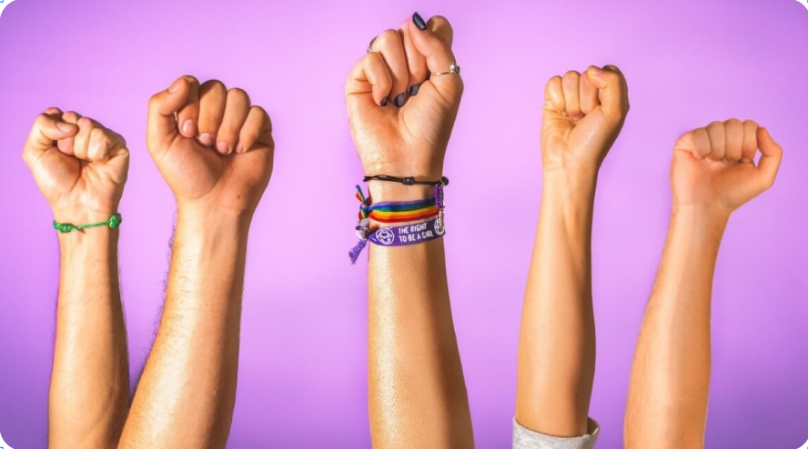
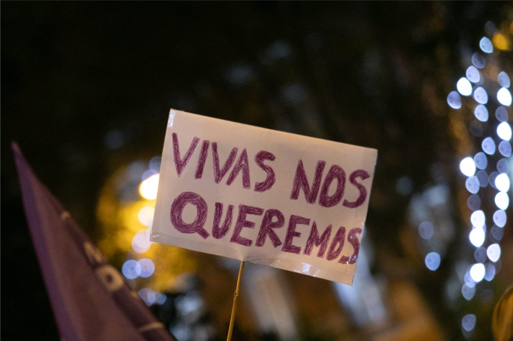

Acompañamiento
Escucha activa, orientación y acompañamiento emocional para mujeres que atraviesan situaciones de violencia o vulnerabilidad.
Asociación feminista
En Vidas Libres trabajamos para visibilizar la violencia de género, ofrecer apoyo real y crear espacios seguros donde cada mujer pueda vivir con libertad, dignidad y autonomía.

Qué hacemos
Escucha activa, orientación y acompañamiento emocional para mujeres que atraviesan situaciones de violencia o vulnerabilidad.
Recursos, talleres y contenidos para prevenir la violencia machista y promover relaciones sanas y respetuosas.
Visibilidad, sensibilización y trabajo conjunto con entidades, servicios y vecinas para generar cambios reales.

Nuestra misión
Queremos poner a la escucha, la dignidad y la igualdad en el centro de cada acción. Trabajamos para que las mujeres puedan denunciar, pedir ayuda y recuperar su autonomía sin sentirse solas.
La violencia de género no es un problema individual: es una realidad social que requiere respuesta colectiva, información y acompañamiento constante.
Recursos
Recursos y orientación inmediata para actuar con seguridad y buscar apoyo profesional.
Actualidad, información y análisis sobre violencia de género y derechos de las mujeres.
Historias de resistencia, recuperación y empoderamiento que nos recuerdan que la salida existe.
Material formativo pensado para prevenir, informar y reforzar relaciones respetuosas.
Contacto